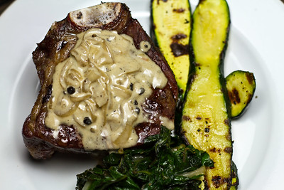

There were long lines in anticipation of the opening of Harlem's first artismal butcher shop called No Justice, No Beef. Customers can get exotic meat as well as prime cuts of high end meats. There is a prep kitchen that will used to teach classes on how to cook your expensive meat. There was a food prep demonstration today with tasty samples available to the media and the public. The shop is owned by Mitchell Green a Harlem resident who was famously beaten by the police in case that turned the city upside down. He later settled a lawsuit against the city for five million dollars. "I wanted to use my settlement money to enrich my neighborhood. I think providing quality meat close to home is going to make the community better." said Mitchell Green

Bone-in Filet with Whiskey, Bacon, Peppercorn Sauce by Another Pint Please... Licensed under CC BY-NC-SA 2.0